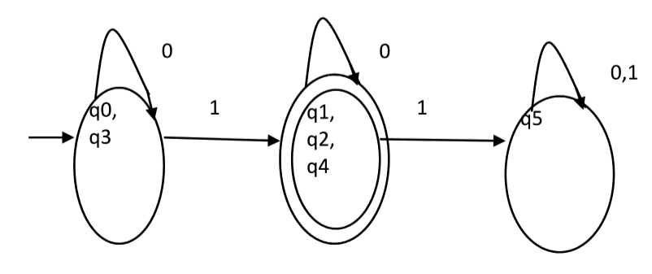
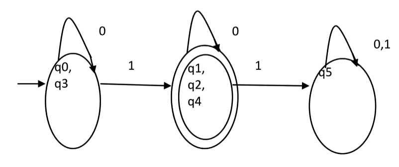

Finite Automata
Finite Automata(FA) is the simplest machine to recognize patterns.The finite automata or finite state machine is an abstract machine which have five elements or tuple. It has a set of states and rules for moving from one state to another but it depends upon the applied input symbol. Basically it is an abstract model of digital computer. Following figure shows some essential features of a general automation.

A Finite Automata consists of the following :
Q : Finite set of states.
Σ : set of Input Symbols.
q : Initial state.
F : set of Final States.
δ : Transition Function.
Deterministic Finite Automata
Q : set of all states.
Σ : set of input symbols. ( Symbols which machine takes as input )
q : Initial state. ( Starting state of a machine )
F : set of final state.
δ : Transition Function, defined as δ : Q X Σ --> Q.
In a DFA, for a particular input character, the machine goes to one state only. A transition function is defined on every state for every input symbol. Also in DFA null (or ε) move is not allowed, i.e., DFA cannot change state without any input character.
For example, below DFA with Σ = {0, 1} accepts all strings ending with 0.

Non-deterministic Finite Automata
NFA is similar to DFA except following additional features:
1. Null (or ε) move is allowed i.e., it can move forward without reading symbols.
2. Ability to transmit to any number of states for a particular input.
Due to above additional features, NFA has a different transition function, rest is same as DFA.
δ: Transition Function
δ: Q X (Σ U ε ) --> 2 ^ Q.
Conversion from NFA to DFA
Suppose there is an NFA N { Q, ∑, q0, δ, F } which recognizes a language L. Then the DFA D
{ Q’, ∑, q0, δ’, F’ } can be constructed for language L as:
Step 1: Initially Q’ = ɸ.
Step 2: Add q0 to Q’.
Step 3: For each state in Q’, find the possible set of states for each input symbol using
transition function of NFA. If this set of states is not in Q’, add it to Q’.
Step 4: Final state of DFA will be all states with contain F (final states of NFA)
Steps to convert e-NFA to DFA
Step 1 : Take ∈ closure for the beginning state of NFA as beginning state of DFA.
Step 2 : Find the states that can be traversed from the present for each input symbol
(union of transition value and their closures for each states of NFA present in current state of DFA).
Step 3 : If any new state is found take it as current state and repeat step 2.
Step 4 : Do repeat Step 2 and Step 3 until no new state present in DFA transition table.
Step 5 : Mark the states of DFA which contains final state of NFA as final states of DFA.
Minimization of DFA
Suppose there is a DFA D { Q, Σ, q0, δ, F } which recognizes a language L. Then the minimized DFA D { Q’, Σ, q0, δ’, F’ }
can be constructed for language L as:
Step 1: We will divide Q (set of states) into two sets. One set will contain all final states and other set will
contain non-final states. This partition is called P0.
Step 2: Initialize k = 1
Step 3: Find Pk by partitioning the different sets of Pk-1. In each set of Pk-1, we will take all possible pair
of states. If two states of a set are distinguishable, we will split the sets into different sets in Pk.
Step 4: Stop when Pk = Pk-1 (No change in partition)
Step 5: All states of one set are merged into one. No. of states in minimized DFA will be equal to no. of sets in Pk.
 
